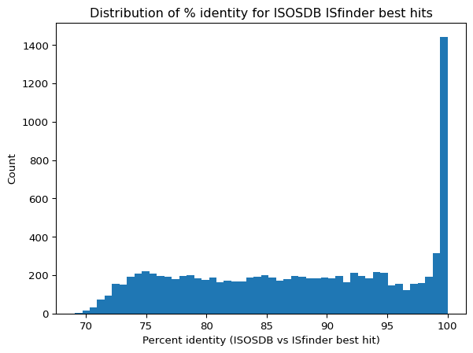

from pathlib import Path
from eris.scan import Scanner
from eris.io import SeqFile
# scan IS in the contigs
p = Path('../../data/ecoli/realfqs-shovill/contigs.gfa')
with Scanner() as scanner:
eris_result = list(scanner.scan(p))
gfa_eris = eris_result[0]
# load the genome graph
graph_assembly = SeqFile("../../data/ecoli/realfqs-shovill/contigs.gfa")
graph_assembly.close()Week 10: Tested eris and collapseis, database and effect prediction comparison
Overview
I applied eris and CollapseIS to real datasets, comparing eris predictions between complete chromosome sequences and simulated draft assemblies. I also evaluated database IS elements ISOSDB versus ISfinder, and performed genome assemblies for additional bacterial datasets.
Daily Log
29-09-2025
- Weekly project meeting
- Dimas walk trough graph collapsing algorithm and disccussed about complicated result from
pseudoR - Dimas will try to perform comparing ISOSDB with ISfinder, by try to “blast” ISOSDB sequences againts ISfinder, look to answer how similar ar they? what sequneces completetly not similar with ISfinder sequences.
- Dimas will compare effect prediction result between eris output from complete sequence and draft assembly.
- Do not use Eris in hte meantime until changes coompleted by Tom.
- Dimas needs to start writing the report and prepare the poster
- Dimas walk trough graph collapsing algorithm and disccussed about complicated result from
30-09-2025
Tried run eriS and collapseis on real reads genome assembly result
from collapse import collapseis
is_eris = collapseis(gfa_eris, graph_assembly)Looks like the IS contigs graph is circular
Looks like the IS contigs graph is circular
Looks like the IS contigs graph is circular
Looks like the IS contigs graph is circular
Looks like the IS contigs graph is circular
Looks like the IS contigs graph is circular
Looks like the IS contigs graph is circular
Looks like the IS contigs graph is circular
Looks like the IS contigs graph is circular
Looks like the IS contigs graph is circularis_eris = dict(sorted(is_eris.items(), key=lambda x: x[1][-1], reverse=True))
total_is = 0
for is_name, path_copies in is_eris.items():
print(f"{is_name} has {path_copies[1]} copies with collapsed path: {" -> ".join(path_copies[0])}")
total_is += path_copies[1]
print(total_is)IS26 has 14 copies with collapsed path: 2421250
IS15 has 13 copies with collapsed path: 2408206
IS1A has 5 copies with collapsed path: 2417035 -> 2420454 -> 2421094
ISEc23 has 4 copies with collapsed path: 2420614 -> 2420442
ISEc52 has 3 copies with collapsed path: 2410721 -> 2419904
ISEc12 has 3 copies with collapsed path: 2419454
ISKpn14 has 2 copies with collapsed path: 1978901
IS1F has 2 copies with collapsed path: 2059700 -> 1197139 -> 2382508 -> 2380568
ISEc9 has 2 copies with collapsed path: 2251149 -> 2418768 -> 2404970 -> 2418864
IS609 has 2 copies with collapsed path: 2261134 -> 1914913 -> 2419940
IS600 has 2 copies with collapsed path: 2396236
IS629 has 2 copies with collapsed path: 2402724 -> 2400660 -> 2417355
ISSfl11 has 2 copies with collapsed path: 2419478 -> 2406896
ISSd1 has 2 copies with collapsed path: 2409810
IS1B has 2 copies with collapsed path: 2416801
ISErsp1 has 2 copies with collapsed path: 2418902
IS6100 has 2 copies with collapsed path: 2419936
IS1397 has 1 copies with collapsed path: 1130321 -> 2408214
ISSfl10 has 1 copies with collapsed path: 1686800
ISEc8 has 1 copies with collapsed path: 2409674
IS200C has 1 copies with collapsed path: 2421038 -> 2368124
IS1X1 has 1 copies with collapsed path: 2368768
IS1541A has 1 copies with collapsed path: 2370398
IS1203E has 1 copies with collapsed path: 2380052
ISEc13 has 1 copies with collapsed path: 2416727
ISEc22 has 1 copies with collapsed path: 2416987
ISEc1 has 1 copies with collapsed path: 2418119
ISCfr4 has 1 copies with collapsed path: 2418565
ISSen3 has 1 copies with collapsed path: 2418565
ISEc24 has 1 copies with collapsed path: 2418565
IS4 has 1 copies with collapsed path: 2418565
IS5 has 1 copies with collapsed path: 2418768
IS1S has 1 copies with collapsed path: 2418770
IS30 has 1 copies with collapsed path: 2418794
IS1541D has 1 copies with collapsed path: 2418930
IS3411 has 1 copies with collapsed path: 2419478
ISKox3 has 1 copies with collapsed path: 2419478
IS100kyp has 1 copies with collapsed path: 2419762
ISEc20 has 1 copies with collapsed path: 2419762
ISEc49 has 1 copies with collapsed path: 2419876
ISCro1 has 1 copies with collapsed path: 2419960
IS21 has 1 copies with collapsed path: 2419960
ISEc38 has 1 copies with collapsed path: 2420170
ISSen1 has 1 copies with collapsed path: 2420282
IS682 has 1 copies with collapsed path: 2420316
IS2 has 1 copies with collapsed path: 2420294
ISEc83 has 1 copies with collapsed path: 2420294
ISEc45 has 1 copies with collapsed path: 2420294
ISEch14 has 1 copies with collapsed path: 2420294
ISKpn37 has 1 copies with collapsed path: 2420448
MITEEc1 has 1 copies with collapsed path: 2420624
ISEc10 has 1 copies with collapsed path: 2420822
ISKpn42 has 1 copies with collapsed path: 2420822
ISEc53 has 1 copies with collapsed path: 2421188
IS621 has 1 copies with collapsed path: 2421274
102Lookup IS elements on the chromosome
import pandas as pd
eris_ec958chr = pd.read_csv("eris-outputs/chromosome_fasta.tsv", sep="\t")
eris_ec958chr = eris_ec958chr[eris_ec958chr['Type'] == "mobile_element"]
eris_ec958chr['Name'].value_counts()Name
ISEc12 4
ISEc23 3
ISEc49 3
IS1A 2
ISEc9 2
MITEEc1 2
ISSd1 2
IS1397 2
IS200C 2
ISEc52 2
IS1F 2
ISEc8 1
ISKpn42 1
ISEc10 1
IS609 1
IS629 1
ISSen10 1
IS5 1
IS682 1
ISCro1 1
IS21 1
ISEc13 1
ISSen1 1
ISEc22 1
ISEch14 1
IS2 1
ISEc83 1
ISCfr4 1
ISSen3 1
ISEc24 1
IS4 1
ISEc1 1
IS621 1
ISEc38 1
ISEc20 1
IS100kyp 1
IS1R 1
ISKpn37 1
IS1203 1
ISKox3 1
IS30 1
ISEc45 1
ISEc53 1
Name: count, dtype: int64Lookup IS elements on the plasmid
!eris scan ../../data/ecoli/plasmid1ec958.fasta > eris-outputs/plasmid1_fasta.tsv
eris_ec958pla1 = pd.read_csv("eris-outputs/plasmid1_fasta.tsv", sep="\t")
eris_ec958pla1 = eris_ec958pla1[eris_ec958pla1['Type'] == "mobile_element"]
eris_ec958pla1['Name'].value_counts()Name
IS26 5
IS15 2
ISEc9 1
IS1R 1
IS15DII 1
IS6100 1
ISErsp1 1
IS1A 1
ISEc23 1
Name: count, dtype: int64When we compare the result from the draft assembly to the result from full chromosome sequence + plasmid sequence. It successfully find contigs path and correctly predict copy number for several IS elements, such as ISEc23, IS1F, ISSd1, and ISEc8, others are miscounted by 1 margin such as ISEc12, IS609, and ISEc9, others miscounted by big margin such as IS26 and IS15.
Several contigs that have low coverage againts ISfinder sequences have very high depth, making it overestimated IS copies in total.
!eris scan ../../data/ecoli/realfqs-shovill/contigs.gfa > eris-outputs/real_assembly_shovill.tsv
eris_real_gfa = pd.read_csv("eris-outputs/real_assembly_shovill.tsv", sep="\t")
eris_real_gfa = eris_real_gfa[eris_real_gfa['Type'] == "mobile_element"]
eris_real_gfa[eris_real_gfa["Name"].isin(["IS26", "IS15"])]| Genome | Feature | Type | Contig | Start | End | Strand | Partial | Element | Element_distance | ... | Element_effect | Percent_identity | Percent_coverage | Name | Family | Group | Synonyms | Origin | IR | DR | |
|---|---|---|---|---|---|---|---|---|---|---|---|---|---|---|---|---|---|---|---|---|---|
| 67 | contigs | 5bf8501a-9d68-42e1-b179-890eb65058a0 | mobile_element | 2408206 | 0 | 297 | 1 | True | 5bf8501a-9d68-42e1-b179-890eb65058a0 | - | ... | - | 100.0 | 18.021844660194176 | IS15 | IS6 | NaN | NaN | Salmonella panama | 14 | 8 |
| 341 | contigs | bf896e78-2eaa-4a31-80d5-949c49e33a14 | mobile_element | 2421250 | 0 | 551 | 1 | True | bf896e78-2eaa-4a31-80d5-949c49e33a14 | - | ... | - | 100.0 | 67.19512195121952 | IS26 | IS6 | NaN | NaN | Proteus vulgaris | 14 | 8 |
2 rows × 22 columns
!grep -E "IS26(_)?" ../../data/ecoli/*.reanotated.bed # reanotated IS elements of EC958
!grep -E "IS15(_)?" ../../data/ecoli/*.reanotated.bed # reanotated IS elements of EC958HG941719.1 36288 37108 IS26_1 0 +
HG941719.1 37108 38748 IS26_2 0 -
HG941719.1 43434 44254 IS26_3 0 -
HG941719.1 75316 76136 IS26_4 0 +
HG941719.1 86143 86963 IS26_5 0 +
HG941719.1 98044 98864 IS26_6 0 -
HG941719.1 102449 103269 IS26_7 0 +
HG941719.1 105455 106275 IS26_8 0 -multiple copy of IS26 (cov 67%) elements do exist on the EC958 chrom + plasmid, but IS26 (cov 18%) do not exits.
!grep "mobile_element" eris-outputs/real_assembly_shovill.tsv | wc -l 115in total, eris predicted there 115 contigs that have IS elements on it.
I think we can make ERIS more stringent by filtering out IS-detected sequences that show very low coverage against ISfinder. In the week 7 logbook, by manual inspection with blast, IS identified sequences that have low (< 50%) coverage relatively also have low identity with ISfinder blast result.
Also point to note as well, maybe it is too naive we use raw depth and median as proxy of the copy number, maybe some region in the genome just more easy to be sequence, so higher depth there doesn’t necessarily indicate multiple copies in the genome.
01-10-2025
Comparing effect prediction between result from full chrom and from draft assembly/contigs
Since we can’t rely on genomic coordinates to compare the effects of a specific IS element at an exact insertion site, I instead use python sets to compare whether the predicted element_location and element_effect are the same between sources for each element.
Organised each IS name with their corresponding location and effect prediction
from collections import defaultdict
# from chomosome sequence
elements_records_chr = defaultdict(list)
with open("eris-outputs/chromosome_fasta.tsv", "r") as file:
for row in file.readlines()[1:]:
row = row.split("\t")
element = row[8]
element_loc = row[10]
element_effect = row[12]
isname = row[15]
feature_type = row[2]
elements_records_chr[element].append([element_loc, element_effect, feature_type, isname])
# from contigs
elements_records_contigs = defaultdict(list)
with open("eris-outputs/eris_gfa_shovill_sim.tsv", "r") as file:
for row in file.readlines()[1:]:
row = row.split("\t")
element = row[8]
element_loc = row[10]
element_effect = row[12]
isname = row[15]
feature_type = row[2]
elements_records_contigs[element].append([element_loc, element_effect, feature_type, isname])# for choromome
isname_records_chr = defaultdict(lambda: defaultdict(list))
# sort in a way that IS name row come first for each element
for k, v in elements_records_chr.items():
elements_records_chr[k] = sorted(v, key=lambda x: x[0])
for element, records in elements_records_chr.items():
isname = None
for i, rec in enumerate(records):
if rec[3] not in ('None', '-'):
isname = rec[3]
if i > 0:
element_loc = rec[0]
element_effect = rec[1]
feature_type = rec[2]
isname_records_chr[isname][element].append([element_loc, element_effect, feature_type])
isname_records_contigs = defaultdict(lambda: defaultdict(list))
# sort in a way that IS name row come first for each element
for k, v in elements_records_contigs.items():
elements_records_contigs[k] = sorted(v, key=lambda x: x[0])
for element, records in elements_records_contigs.items():
isname = None
for i, rec in enumerate(records):
if rec[3] not in ('None', '-'):
isname = rec[3]
if i > 0:
element_loc = rec[0]
element_effect = rec[1]
feature_type = rec[2]
isname_records_contigs[isname][element].append([element_loc, element_effect, feature_type])Compared them
print(f"We found {len(isname_records_chr)} unique IS names from full chrom sequence input")
print(f"We found {len(isname_records_contigs)} unique IS names from contigs input")We found 42 unique IS names from full chrom sequence input
We found 49 unique IS names from contigs inputAn element is considered concordant in the effect prediction if its predicted effects (in python set) are identical between the chromosome and contigs, and discordant otherwise.
from collections import defaultdict
check_concordance = defaultdict(bool)
# Combine all insertion names from chromosome and contigs
all_insertions = set(isname_records_chr) | set(isname_records_contigs)
for ins in all_insertions:
# Get records for chromosome and contigs, defaulting to empty dict if missing
chr_records = isname_records_chr.get(ins, {})
contig_records = isname_records_contigs.get(ins, {})
# Flatten the nested lists of effects
flat_chr = [item for sublist in chr_records.values() for item in sublist]
flat_contig = [item for sublist in contig_records.values() for item in sublist]
# Keep only effects where the second field is meaningful
chr_effects = {tuple(item) for item in flat_chr if item[1] != '-'}
contig_effects = {tuple(item) for item in flat_contig if item[1] != '-'}
# Compare sets for concordance
check_concordance[ins] = (chr_effects == contig_effects)
print(f"{ins}:")
print(f" Chromosome effects: {chr_effects}")
print(f" Contig effects : {contig_effects}")
print(f" Concordant : {check_concordance[ins]}\n")ISSen3:
Chromosome effects: {('downstream', 'disrupted', 'CDS'), ('upstream', 'disrupted', 'CDS')}
Contig effects : {('downstream', 'disrupted', 'CDS'), ('upstream', 'disrupted', 'CDS')}
Concordant : True
IS1541D:
Chromosome effects: set()
Contig effects : set()
Concordant : True
ISEc52:
Chromosome effects: {('downstream', 'disrupted', 'CDS'), ('upstream', 'disrupted', 'CDS')}
Contig effects : set()
Concordant : False
ISSen10:
Chromosome effects: {('downstream', 'disrupted', 'CDS'), ('upstream', 'disrupted', 'CDS')}
Contig effects : {('downstream', 'disrupted', 'CDS'), ('upstream', 'disrupted', 'CDS')}
Concordant : True
IS1F:
Chromosome effects: {('upstream', 'disrupted', 'CDS')}
Contig effects : set()
Concordant : False
IS1A:
Chromosome effects: {('upstream', 'disrupted', 'CDS')}
Contig effects : set()
Concordant : False
ISEc24:
Chromosome effects: {('upstream', 'disrupted', 'CDS')}
Contig effects : {('upstream', 'disrupted', 'CDS')}
Concordant : True
ISEc9:
Chromosome effects: {('downstream', 'upregulated', 'CDS'), ('upstream', 'disrupted', 'CDS')}
Contig effects : {('downstream', 'upregulated', 'CDS'), ('upstream', 'disrupted', 'CDS')}
Concordant : True
ISEc1:
Chromosome effects: {('downstream', 'disrupted', 'CDS')}
Contig effects : {('downstream', 'disrupted', 'CDS')}
Concordant : True
ISEc8:
Chromosome effects: {('upstream', 'disrupted', 'CDS')}
Contig effects : set()
Concordant : False
ISEc83:
Chromosome effects: set()
Contig effects : set()
Concordant : True
IS2:
Chromosome effects: {('upstream', 'disrupted', 'CDS')}
Contig effects : {('upstream', 'disrupted', 'CDS')}
Concordant : True
IS1203:
Chromosome effects: set()
Contig effects : set()
Concordant : True
IS1R:
Chromosome effects: {('downstream', 'disrupted', 'CDS'), ('upstream', 'disrupted', 'CDS')}
Contig effects : set()
Concordant : False
ISEc13:
Chromosome effects: set()
Contig effects : {('upstream', 'disrupted', 'CDS')}
Concordant : False
MITEEc1:
Chromosome effects: {('downstream', 'disrupted', 'CDS'), ('upstream', 'disrupted', 'CDS')}
Contig effects : {('downstream', 'disrupted', 'CDS'), ('upstream', 'disrupted', 'CDS')}
Concordant : True
ISEc20:
Chromosome effects: set()
Contig effects : set()
Concordant : True
IS600:
Chromosome effects: set()
Contig effects : {('upstream', 'disrupted', 'CDS')}
Concordant : False
ISEc38:
Chromosome effects: set()
Contig effects : set()
Concordant : True
ISSen1:
Chromosome effects: {('downstream', 'disrupted', 'CDS')}
Contig effects : {('downstream', 'disrupted', 'CDS')}
Concordant : True
ISEc43:
Chromosome effects: set()
Contig effects : {('downstream', 'disrupted', 'CDS')}
Concordant : False
ISEc10:
Chromosome effects: set()
Contig effects : set()
Concordant : True
ISEch14:
Chromosome effects: {('downstream', 'disrupted', 'CDS')}
Contig effects : set()
Concordant : False
ISEc12:
Chromosome effects: {('downstream', 'disrupted', 'CDS'), ('upstream', 'disrupted', 'CDS')}
Contig effects : set()
Concordant : False
IS21:
Chromosome effects: {('upstream', 'disrupted', 'CDS')}
Contig effects : {('upstream', 'disrupted', 'CDS')}
Concordant : True
IS30:
Chromosome effects: {('upstream', 'disrupted', 'CDS')}
Contig effects : set()
Concordant : False
IS621:
Chromosome effects: {('upstream', 'disrupted', 'CDS')}
Contig effects : {('upstream', 'disrupted', 'CDS')}
Concordant : True
IS1X2:
Chromosome effects: set()
Contig effects : set()
Concordant : True
IS911:
Chromosome effects: set()
Contig effects : {('downstream', 'disrupted', 'CDS')}
Concordant : False
ISEc53:
Chromosome effects: set()
Contig effects : set()
Concordant : True
ISCro1:
Chromosome effects: set()
Contig effects : set()
Concordant : True
ISEch5:
Chromosome effects: set()
Contig effects : {('downstream', 'disrupted', 'CDS')}
Concordant : False
ISEc22:
Chromosome effects: {('downstream', 'disrupted', 'CDS')}
Contig effects : set()
Concordant : False
IS3411:
Chromosome effects: set()
Contig effects : {('upstream', 'disrupted', 'CDS')}
Concordant : False
ISEc45:
Chromosome effects: set()
Contig effects : set()
Concordant : True
ISEc49:
Chromosome effects: {('downstream', 'disrupted', 'CDS'), ('upstream', 'disrupted', 'CDS')}
Contig effects : {('upstream', 'disrupted', 'CDS')}
Concordant : False
ISEc23:
Chromosome effects: {('downstream', 'disrupted', 'CDS'), ('downstream', 'upregulated', 'CDS'), ('upstream', 'disrupted', 'CDS')}
Contig effects : {('downstream', 'disrupted', 'CDS')}
Concordant : False
ISSd1:
Chromosome effects: {('downstream', 'disrupted', 'CDS'), ('upstream', 'disrupted', 'CDS')}
Contig effects : set()
Concordant : False
IS1B:
Chromosome effects: set()
Contig effects : set()
Concordant : True
ISEc47:
Chromosome effects: set()
Contig effects : set()
Concordant : True
ISCfr4:
Chromosome effects: {('upstream', 'disrupted', 'CDS')}
Contig effects : {('upstream', 'disrupted', 'CDS')}
Concordant : True
IS4:
Chromosome effects: {('downstream', 'disrupted', 'CDS'), ('upstream', 'disrupted', 'CDS')}
Contig effects : {('downstream', 'disrupted', 'CDS'), ('upstream', 'disrupted', 'CDS')}
Concordant : True
IS200C:
Chromosome effects: {('downstream', 'disrupted', 'CDS'), ('upstream', 'disrupted', 'CDS')}
Contig effects : {('upstream', 'disrupted', 'CDS')}
Concordant : False
IS609:
Chromosome effects: {('downstream', 'disrupted', 'CDS'), ('upstream', 'disrupted', 'CDS')}
Contig effects : {('downstream', 'disrupted', 'CDS'), ('upstream', 'disrupted', 'CDS')}
Concordant : True
IS100kyp:
Chromosome effects: set()
Contig effects : set()
Concordant : True
IS629:
Chromosome effects: {('upstream', 'disrupted', 'CDS')}
Contig effects : set()
Concordant : False
ISKpn42:
Chromosome effects: set()
Contig effects : set()
Concordant : True
IS5:
Chromosome effects: set()
Contig effects : set()
Concordant : True
IS682:
Chromosome effects: {('downstream', 'upregulated', 'CDS')}
Contig effects : set()
Concordant : False
ISKox3:
Chromosome effects: set()
Contig effects : set()
Concordant : True
IS1397:
Chromosome effects: {('downstream', 'disrupted', 'CDS'), ('upstream', 'disrupted', 'CDS')}
Contig effects : set()
Concordant : False
By manual inspection, if they are disagree: Exist on chromosome, but doesn’t in contigs -> IS elements are detected, but they usually fragmented into several contigs Doesn’t exist on chromosome, but exist in contigs -> Overcalls or overly sensitive (low coverage)
# Count True and False
count_true = sum(check_concordance.values())
count_false = sum(not v for v in check_concordance.values())
print(f"True: {count_true}, False: {count_false}")True: 29, False: 2203-10-2025
Comparing ISOSDB and ISfinder sequences
Create blast database for both sources, and blast ISOSDB againts ISfinder, and ISfinder againts ISOSDB. ISOSDB has
makeblastdb -in ISOSDB.V3.fna -dbtype nucl -out ISOSDB
makeblastdb -in IS.fna -dbtype nucl -out ISfinder
blastn -query ISOSDB.V3.fna -db ISfinder -task megablast -outfmt "6 qseqid sseqid pident length qlen slen qstart qend sstart send evalue bitscore qcovs" -evalue 1e-6 -max_target_seqs 1 -num_threads 8 -out isosdb_vs_isfinder.tsv
blastn -query IS.fna -db ISOSDB -task megablast -outfmt "6 qseqid sseqid pident length qlen slen qstart qend sstart send evalue bitscore qcovs" -evalue 1e-6 -max_target_seqs 1 -num_threads 8 -out isfinder_vs_isosdb.tsvQuick summary numbers from BLAST outputs
import csv
from collections import defaultdict
import matplotlib.pyplot as plt
TOTAL_ISOSDB = 22713
TOTAL_ISFINDER = 5970
def read_best_hits(tsv):
best = {}
rows = []
with open(tsv) as fh:
for r in csv.reader(fh, delimiter='\t'):
q, s, pident, length, qlen, slen, qstart, qend, sstart, send, evalue, bitscore, qcovs = r
pident = float(pident); qcovs = float(qcovs)
best[q] = (s, pident, qcovs)
rows.append((q,s,pident,qcovs))
return best, rows
isosdb_best, isosdb_rows = read_best_hits('../../data/comparing-db/isosdb_vs_isfinder.tsv')
isfinder_best, isfinder_rows = read_best_hits('../../data/comparing-db/isfinder_vs_isosdb.tsv')
## without threshold
total1 = len(isosdb_rows)
total2 = len(isfinder_rows)
print("=== Without threshold ===")
print(f"ISOSDB -> ISfinder: {total1}/{TOTAL_ISOSDB} ({100*total1/TOTAL_ISOSDB:.2f}%)")
print(f"ISfinder -> ISOSDB: {total2}/{TOTAL_ISFINDER} ({100*total2/TOTAL_ISFINDER:.2f}%)")
# thresholds
ID_THRESH = 90.0
COV_THRESH = 80.0
def count_hits(rows, idt=ID_THRESH, covt=COV_THRESH):
passed = [r for r in rows if r[2] >= idt and r[3] >= covt]
return len(passed), len(rows), passed
hits1, total1, passed_rows1 = count_hits(isosdb_rows)
hits2, total2, passed_rows2 = count_hits(isfinder_rows)
print("\n=== With threshold (≥90% identity, ≥80% coverage) ===")
print(f"ISOSDB -> ISfinder: {hits1}/{total1} ({100*hits1/total1:.2f}%)")
print(f"ISfinder -> ISOSDB: {hits2}/{total2} ({100*hits2/total2:.2f}%)")
# Reciprocal Best Hit
# sequence A (in ISOSDN) → best hit is sequence B (in ISfinder).
# sequence B (in ISfinder) → best hit is sequence A (in ISOSDB).
# A–B is an RBH pair.
rbh = []
for q, (s, p, c) in isosdb_best.items():
if s in isfinder_best and isfinder_best[s][0] == q:
# both are best for each other
rbh.append((q, s, p, c))
print("Reciprocal Best Hit count:", len(rbh))
# Plot histogram of percent identity (ISOSDB -> ISfinder)
pids = [r[2] for r in isosdb_rows]
plt.figure()
plt.hist(pids, bins=50)
plt.xlabel('Percent identity (ISOSDB vs ISfinder best hit)')
plt.ylabel('Count')
plt.title('Distribution of % identity for ISOSDB ISfinder best hits')
plt.show()=== Without threshold ===
ISOSDB -> ISfinder: 9842/22713 (43.33%)
ISfinder -> ISOSDB: 3446/5970 (57.72%)
=== With threshold (≥90% identity, ≥80% coverage) ===
ISOSDB -> ISfinder: 3649/9842 (37.08%)
ISfinder -> ISOSDB: 2241/3446 (65.03%)
Reciprocal Best Hit count: 2466
05-10-2025
Run genome assembly shovill on Illumina fastq from Hall et al.
#!/usr/bin/bash
set -e
set -u
set -o pipefail
indir=$1
outdir=$2
samples=$(ls $indir | grep "_1.fastq.gz" | sed 's/_1.fastq.gz//')
for sample in $samples;
do echo "Processing ${sample}..";
shovill --outdir ${outdir}/${sample} --R1 ${indir}/${sample}"_1.fastq.gz" --R2 ${indir}/${sample}"_2.fastq.gz"
done
ssubmit -m 64g -t 1d shovill-more "./run_shovill.sh illumina shovill-assemblies" -- -c 10